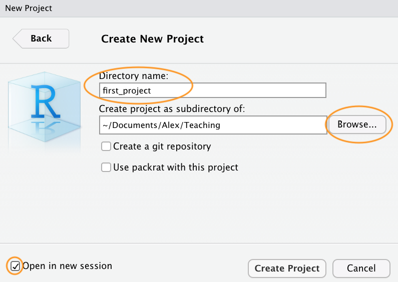
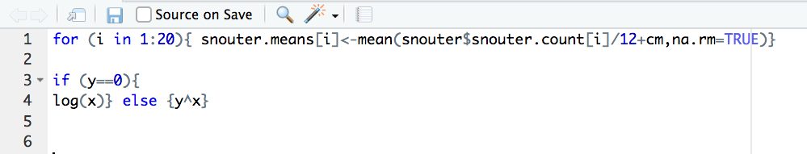

plot(1:10)
Bien que R ne soit pas nouveau, sa popularité a augmenté rapidement depuis une dizaine d’années (voir ici pour des données intéressantes). Il a été créé et développé à l’origine par Ross Ihaka et Robert Gentleman au cours des années 1990 et la première version stable a été publiée en 2000. Aujourd’hui, R est maintenu par la R Development Core Team. Alors, pourquoi R est-il devenu si populaire et pourquoi devrais-tu apprendre à l’utiliser ? Voici quelques raisons :
Toutes les raisons ci-dessus sont d’excellentes raisons d’utiliser R. Cependant, à notre avis, la plus grande raison d’utiliser R est qu’il facilite les pratiques de recherche robustes et reproductibles. Contrairement aux logiciels plus traditionnels de type “pointer et cliquer”, écrire du code te permet d’avoir un enregistrement permanent et précis de toutes les méthodes que tu as utilisées (et des décisions que tu as prises) pour l’analyse de tes données. Tu peux ensuite partager ce code (et tes données) avec d’autres chercheurs / collègues / réviseurs de revues qui pourront reproduire ton analyse à l’identique. C’est l’un des principes de la science ouverte. Nous aborderons d’autres sujets pour faciliter la science ouverte tout au long de ce livre, notamment la création de rapports reproductibles et contrôle des versions.
Dans ce chapitre, nous aborderons :
Bonne chance et n’oublie pas de t’amuser.
Pour être opérationnel, la première chose à faire est d’installer R. R est disponible gratuitement pour les systèmes d’exploitation Windows, Mac et Linux à partir du [site Web du Comprehensive R Archive Network (C]RAN) CRAN. Pour les utilisateurs de Windows et de Mac, nous te suggérons de télécharger et d’installer les versions binaires précompilées. Il existe des instructions assez complètes pour installer R pour chaque système d’exploitation (Windows,Mac ou linux ).
Quel que soit le système d’exploitation que tu utilises, une fois que tu as installé R, tu dois vérifier qu’il fonctionne correctement. Le plus simple est de lancer R en double-cliquant sur l’icône R (Windows ou Mac) ou en tapant R dans la console (Linux). Tu devrais voir apparaître la Console R et tu devrais pouvoir taper des commandes R dans la Console après l’invite de commande >. Essaie de taper le code R suivant et appuie sur Entrée :
plot(1:10)
Un graphique des nombres 1 à 10 sur les axes x et y devrait apparaître. Si c’est le cas, tu peux commencer. Si ce n’est pas le cas, nous te suggérons de noter toutes les erreurs produites et d’utiliser Google pour résoudre le problème.
Nous recommandons fortement d’utiliser un Intégrée Ddéveloppement Environnement de développement (IDE) pour travailler avec R. Un IDE simple et extrêmement populaire est RStudio. Une alternative à RStudio est Visual Studio Code, ou VSCode. Un IDE peut être considéré comme un complément à R qui fournit une interface plus conviviale, incorporant la console R, un éditeur de scripts et d’autres fonctionnalités utiles (comme R markdown et l’intégration de Git Hub).
Tu dois installer R avant d’installer un IDE (voir section précédente pour plus de détails).
Lorsque nous nous référons à L’IDE dans la suite du texte, il s’agit de RStudio ou de VScode.
RStudio est disponible gratuitement pour les systèmes d’exploitation Windows, Mac et Linux et peut être téléchargé à partir du site de RStudio. Tu dois sélectionner la version ‘RStudio Desktop’.
VSCode est disponible gratuitement pour les systèmes d’exploitation Windows, Mac et Linux et peut être téléchargé à partir du site de VS Code.
En outre, tu dois installer le l’extension R de VSCode. Pour faire de VSCode une véritable centrale pour travailler avec R, nous te recommandons fortement d’installer également :
Plutôt que d’utiliser un IDE “tout en un”, de nombreuses personnes choisissent d’utiliser R et un éditeur de script séparé pour écrire et exécuter le code R. Si tu ne sais pas ce qu’est un éditeur de script, tu peux l’assimiler à un traitement de texte, mais spécialement conçu pour écrire du code. Heureusement, de nombreux éditeurs de scripts sont disponibles gratuitement, alors n’hésite pas à les télécharger et à expérimenter jusqu’à ce que tu en trouves un qui te plaise. Certains éditeurs de scripts ne sont disponibles que pour certains systèmes d’exploitation et tous ne sont pas spécifiques à R. Tu trouveras ci-dessous des suggestions d’éditeurs de scripts. C’est à toi de choisir celui que tu veux : l’une des grandes qualités de R est que TU c’est que tu peux choisir comment tu veux utiliser R.
Un moyen léger mais efficace de travailler avec R est d’utiliser des éditeurs de texte avancés tels que :
Ces environnements sont plus puissants que de simples éditeurs de texte, et sont similaires à RStudio :
Lorsque tu ouvres R studio pour la première fois, tu devrais voir la présentation suivante (elle peut être légèrement différente sur un ordinateur Windows).

La grande fenêtre (ou volet) sur la gauche est le Console de la console. La fenêtre en haut à droite est la fenêtre Environnement / Histoire / Connexions et la fenêtre en bas à droite est la fenêtre Fichiers / Tracés / Paquets / Aide / Visionneuse de la fenêtre. Nous aborderons chacun de ces volets ci-dessous. Tu peux personnaliser l’emplacement de chaque volet en cliquant sur le menu “Outils” puis en sélectionnant Options globales –> Disposition des volets. Tu peux redimensionner les volets en cliquant sur le milieu des bords de la fenêtre et en le faisant glisser dans la direction souhaitée. Il existe une multitude d’autres façons de personnaliser RStudio.
La console est le cheval de bataille de R. C’est là que R évalue tout le code que tu écris. Tu peux taper du code R directement dans la console à l’invite de la ligne de commande, >. Par exemple, si tu tapes 2 + 2 dans la console, tu devrais obtenir la réponse 4 (rassurante). Ne t’inquiète pas pour le [1] au début de la ligne pour l’instant.

Cependant, dès que tu commences à écrire plus de code R, cela devient plutôt encombrant. Au lieu de taper le code R directement dans la console, une meilleure approche consiste à créer un script R. Un script R est un simple fichier texte avec une balise .R qui contient tes lignes de code R. Ces lignes de code sont ensuite introduites dans la console R, ligne par ligne. Pour créer un nouveau script R, clique sur le menu “Fichier” puis sélectionne Nouveau fichier –> Script R.

Tu remarqueras qu’une nouvelle fenêtre (appelée volet Source) apparaît en haut à gauche de RStudio et que la console se trouve maintenant en bas à gauche. La nouvelle fenêtre est un éditeur de script et c’est là que tu écriras ton code.

Pour faire passer ton code de ton éditeur de script à la console, place ton curseur sur la ligne de code, puis clique sur le bouton “Exécuter” en haut à droite de la fenêtre de l’éditeur de script.

Tu devrais voir le résultat dans la fenêtre de la console. Si le fait de cliquer sur le bouton “Exécuter” devient fastidieux, tu peux utiliser le raccourci clavier “ctrl + entrée” (sous Windows et Linux) ou “cmd + entrée” (sous Mac). Tu peux enregistrer tes scripts R sous la forme d’un fichier .R en sélectionnant le menu ‘Fichier’ et en cliquant sur enregistrer. Remarque que le nom du fichier dans l’onglet devient rouge pour te rappeler que tu as des modifications non enregistrées. Pour ouvrir ton script R dans RStudio, sélectionne le menu ‘Fichier’ puis ‘Ouvrir le fichier…’. Enfin, il est bon de noter que, bien que les scripts R soient enregistrés avec un nom de fichier .R il s’agit en fait de simples fichiers texte qui peuvent être ouverts avec n’importe quel éditeur de texte.
La fenêtre Environnement / Historique / Connexions te montre de nombreuses informations utiles. Tu peux accéder à chaque composant en cliquant sur l’onglet approprié dans le volet.
L’onglet ‘Environnement’ affiche tous les objets que tu as créés dans l’environnement actuel (global). Ces objets peuvent être des données que tu as importées ou des fonctions que tu as écrites. Les objets peuvent être affichés sous forme de liste ou de grille en sélectionnant ton choix dans le bouton déroulant situé en haut à droite de la fenêtre. Si tu es dans le format Grille, tu peux supprimer des objets de l’environnement en cochant la case vide à côté du nom de l’objet, puis en cliquant sur l’icône du balai. Il existe également un bouton “Importer un ensemble de données” qui permet d’importer des données sauvegardées dans différents formats de fichiers. Cependant, nous te conseillons de ne pas utiliser cette approche pour importer tes données car elle n’est pas reproductible et donc pas robuste (voir Chapitre 3 pour plus de détails).
L’onglet ‘Historique’ contient une liste de toutes les commandes que tu as entrées dans la console R. Tu peux rechercher dans ton historique la ligne de code que tu as oubliée, renvoyer le code sélectionné dans la Console ou la fenêtre Source. En général, nous n’utilisons jamais cette fonction car nous nous référons toujours à notre script R.
L’onglet “Connexions” te permet de te connecter à diverses sources de données telles que des bases de données externes.
L’onglet ‘Fichiers’ répertorie tous les fichiers et répertoires externes dans le répertoire de travail actuel de ton ordinateur. Il fonctionne comme l’explorateur de fichiers (Windows) ou le Finder (Mac). Tu peux ouvrir, copier, renommer, déplacer et supprimer les fichiers listés dans la fenêtre.
L’onglet ‘Tracés’ est l’endroit où tous les tracés que tu as créés dans R sont affichés (à moins que tu ne dises le contraire à R). Tu peux “zoomer” sur les tracés pour les agrandir à l’aide du bouton de la loupe, et faire défiler les tracés créés précédemment à l’aide des boutons fléchés. Il est également possible d’exporter les tracés vers un fichier externe à l’aide du menu déroulant “Exporter”. Les tracés peuvent être exportés dans différents formats de fichiers tels que jpeg, png, pdf, tiff ou copiés dans le presse-papiers (bien qu’il soit probablement préférable d’utiliser les fonctions R appropriées pour ce faire - voir Chapitre 4 pour plus de détails).
L’onglet ‘Paquets’ répertorie tous les paquets que tu as installés sur ton ordinateur. Tu peux également installer de nouveaux paquets et mettre à jour les paquets existants en cliquant respectivement sur les boutons ‘Installer’ et ‘Mettre à jour’.
L’onglet ‘Aide’ affiche la documentation d’aide R pour n’importe quelle fonction. Nous verrons comment afficher les fichiers d’aide et comment rechercher de l’aide dans la section Chapitre 2.
L’onglet ‘Visionneuse’ affiche le contenu web local tel que les graphiques web générés par certains paquets.

Contient :


Comprend :

Contient :

L’installation de base de R est livrée en standard avec de nombreux paquets utiles. Ces paquets contiennent de nombreuses fonctions que tu utiliseras au quotidien. Cependant, lorsque tu commenceras à utiliser R pour des projets plus variés (et que ton utilisation de R évoluera), tu verras qu’il arrivera un moment où tu auras besoin d’étendre les capacités de R. Heureusement, plusieurs milliers d’utilisateurs de R ont développé un code utile et l’ont partagé sous forme de paquets installables. Tu peux considérer un paquet comme une collection de fonctions, de données et de fichiers d’aide rassemblés dans une structure standard bien définie que tu peux télécharger et installer dans R. Ces paquets peuvent être téléchargés à partir de diverses sources, mais les plus populaires sont les suivantes CRAN, Bioconductor et GitHub. Actuellement, le CRAN héberge plus de 15 000 paquets et est le dépôt officiel des paquets R fournis par les utilisateurs. Bioconductor fournit des logiciels open source orientés vers la bio-informatique et héberge plus de 1800 paquets R. GitHub est un site Web qui héberge des dépôts git pour toutes sortes de logiciels et de projets (pas seulement R). Souvent, les versions de développement de pointe des paquets R sont hébergées sur GitHub, donc si tu as besoin de toutes les nouvelles cloches et sifflets, cela peut être une option. Cependant, l’inconvénient potentiel de l’utilisation de la version de développement d’un paquetage R est qu’elle peut ne pas être aussi stable que la version hébergée sur CRAN (elle est en cours de développement !) et que la mise à jour des paquets n’est pas automatique.
Pour installer un paquet à partir du CRAN, tu peux utiliser la commande install.packages() fonction. Par exemple, si tu veux installer le paquet remotes entre le code suivant dans la fenêtre Console de RStudio (note : tu auras besoin d’une connexion internet pour faire cela)
install.packages("remotes", dependencies = TRUE)Il te sera peut-être demandé de choisir un miroir CRAN, sélectionne simplement ‘0-cloud’ ou un miroir proche de ton emplacement. Le dependencies = TRUE permet de s’assurer que les paquets supplémentaires nécessaires seront également installés.
C’est une bonne pratique de mettre régulièrement à jour tes paquets précédemment installés pour avoir accès aux nouvelles fonctionnalités et aux corrections de bogues. Pour mettre à jour les paquets CRAN, tu peux utiliser la commande update.packages() (tu auras besoin d’une connexion Internet fonctionnelle pour cela)
update.packages(ask = FALSE)La fonction ask = FALSE évite d’avoir à confirmer chaque téléchargement de paquet, ce qui peut être pénible si tu as beaucoup de paquets installés.
Pour installer les paquets de Bioconductor, le processus est un peu différent. Tu dois d’abord installer le BiocManager 📦 paquet. Tu ne dois le faire qu’une seule fois, à moins que tu ne réinstalles ou mettes à jour R.
install.packages("BiocManager", dependencies = TRUE)Une fois que le BiocManager 📦 a été installé, tu peux soit installer tous les paquets “de base” de Bioconductor à l’aide de la commande
BiocManager::install()ou installer des paquets spécifiques tels que le GenomicRanges 📦 et edgeR 📦 paquets
BiocManager::install(c("GenomicRanges", "edgeR"))Pour mettre à jour les paquets de Bioconductor, il suffit d’utiliser la commande BiocManager::install() à nouveau
BiocManager::install(ask = FALSE)Encore une fois, tu peux utiliser la fonction ask = FALSE pour éviter d’avoir à confirmer chaque téléchargement de paquet.
Il existe de multiples options pour installer des paquets hébergés sur GitHub. La méthode la plus efficace est sans doute d’utiliser la fonction install_github() de la fonction remotes 📦 (tu as installé ce paquet précédemment). Avant d’utiliser la fonction, tu devras connaître le nom d’utilisateur GitHub du propriétaire du dépôt ainsi que le nom du dépôt. Par exemple, la version de développement de dplyr 📦 de Hadley Wickham est hébergée sur le compte GitHub de tidyverse et porte le nom de dépôt ” dplyr ” (il suffit de taper ” github dplyr ” sur Google). Pour installer cette version depuis GitHub, utilise
remotes::install_github("tidyverse/dplyr")Le moyen le plus sûr (à notre connaissance) de mettre à jour un paquetage installé depuis GitHub est de le réinstaller en utilisant la commande ci-dessus.
Une fois que tu as installé un paquet sur ton ordinateur, il n’est pas immédiatement disponible pour que tu puisses l’utiliser. Pour utiliser un paquet, tu dois d’abord le charger à l’aide de la commande library() en utilisant la fonction Par exemple, pour charger le paquet remotes 📦 que tu as précédemment installé
Le library() chargera également tous les paquets supplémentaires nécessaires et pourra imprimer des informations supplémentaires sur les paquets. Il est important de savoir qu’à chaque fois que tu démarres une nouvelle session R (ou que tu restaures une session précédemment sauvegardée), tu dois charger les paquets que tu vas utiliser. Nous avons tendance à mettre tous nos library() nécessaires à notre analyse en haut de nos scripts R pour les rendre facilement accessibles et faciles à compléter au fur et à mesure que notre code se développe. Si tu essaies d’utiliser une fonction sans avoir au préalable chargé le package R correspondant, tu recevras un message d’erreur indiquant que R n’a pas pu trouver la fonction. Par exemple, si tu essaies d’utiliser la fonction install_github() sans charger le paquetage remotes 📦 tu recevras l’erreur suivante
install_github("tidyverse/dplyr")
# Error in install_github("tidyverse/dplyr") :
# could not find function "install_github"Parfois, il peut être utile d’utiliser une fonction sans utiliser d’abord le package library() fonction. Si, par exemple, tu n’utilises qu’une ou deux fonctions dans ton script et que tu ne veux pas charger toutes les autres fonctions d’un paquet, tu peux accéder directement à la fonction en spécifiant le nom du paquet suivi de deux points, puis du nom de la fonction.
remotes::install_github("tidyverse/dplyr")C’est ainsi que nous avons pu utiliser le install() et install_github()fonctions ci-dessus sans charger les paquets au préalableBiocManager 📦 et remotes 📦 . La plupart du temps, nous recommandons d’utiliser le library() fonction.
Le répertoire de travail est l’emplacement par défaut où R cherchera les fichiers que tu veux charger et où il mettra les fichiers que tu enregistres. L’un des avantages de l’utilisation des projets RStudio est que lorsque tu ouvres un projet, il définit automatiquement ton répertoire de travail à l’emplacement approprié. Tu peux vérifier le chemin d’accès de ton répertoire de travail en utilisant l’une des deux méthodes suivantes getwd() ou here() fonctions.
getwd()[1] "/home/julien/Documents/courses/biostats/R_way"Dans l’exemple ci-dessus, le répertoire de travail est un dossier appelé ‘R_way’ qui est un sous-dossier de ‘biostats’ dans le dossier ‘courses’ qui lui-même se trouve dans un dossier ‘Documents’ situé dans le dossier ‘julien’ qui lui-même se trouve dans le dossier ‘home’. Sur un ordinateur fonctionnant sous Windows, notre répertoire de travail comprendrait également une lettre de lecteur (par ex. C:\home\julien\Documents\courses\biostats\R_way).
Si tu n’utilises pas d’IDE, tu dois définir ton répertoire de travail à l’aide de la commande setwd() au début de chaque script R (ce que nous avons fait pendant de nombreuses années).
setwd("/home/julien/Documents/courses/biostats/R_way/")Cependant, le problème avec setwd() est qu’il utilise un absolu qui est spécifique à l’ordinateur sur lequel tu travailles. Si tu veux envoyer ton script à quelqu’un d’autre (ou si tu travailles sur un autre ordinateur), ce chemin d’accès absolu ne fonctionnera pas sur l’ordinateur de ton ami/collègue car la configuration de son répertoire sera différente (il est peu probable que tu aies une structure de répertoire /home/julien/Documents/courses/biostats/ sur ton ordinateur). Il en résulte un projet qui n’est pas autonome et qui n’est pas facilement transportable. Les IDE résolvent ce problème en te permettant d’utiliser relatif qui sont relatifs au fichier racine du projet. Le répertoire du projet racine est simplement le répertoire qui contient le fichier .Rproj dans Rstudio (first_project.Rproj dans notre cas) ou le dossier de base de ton espace de travail dans VScode. Si tu veux partager ton analyse avec quelqu’un d’autre, il te suffit de copier l’ensemble du répertoire du projet et de l’envoyer à ton à ton collaborateur. Il lui suffira alors d’ouvrir le fichier du projet et tous les scripts R qui contiennent des références à des chemins de fichiers relatifs fonctionneront tout simplement. Par exemple, disons que tu as créé un sous-répertoire appelé data dans ton répertoire de projet racine qui contient un fichier délimité en csv appelé mydata.csv (nous aborderons les structures de répertoire ci-dessous). Pour importer cette base de données dans un projet RStudio à l’aide de la fonction read.csv() (ne t’inquiète pas pour l’instant, nous aborderons ce sujet de façon beaucoup plus détaillée dans la section chapitre 3), tout ce que tu dois inclure dans ton script R est
dat <- read.csv("data/mydata.csv")Parce que le chemin d’accès au fichier data/mydata.csv est relatif au répertoire du projet, peu importe l’endroit où ton collaborateur enregistre le répertoire du projet sur son ordinateur, il fonctionnera toujours.
Si tu n’utilises pas un projet RStudio ou un espace de travail VScode, tu devras soit définir le répertoire de travail en fournissant le chemin complet de ton répertoire, soit spécifier le chemin complet du fichier de données. Aucune de ces deux options n’est reproductible sur d’autres ordinateurs.
ou
dat <- read.csv("/home/julien/Documents/courses/biostats/R_way/data/mydata.csv")Pour ceux qui veulent pousser plus loin la notion de chemins d’accès relatifs, jette un coup d’œil à l’option here() de la fonction here[paquet][ici]. Les here() te permet de construire des chemins d’accès pour n’importe quel fichier par rapport au répertoire racine du projet qui sont également indépendants du système d’exploitation (fonctionne sur une machine Mac, Windows ou Linux). Par exemple, pour importer notre mydata.csv à partir du répertoire data il suffit d’utiliser :
En plus d’utiliser RStudio Projects, c’est aussi une très bonne pratique de structurer ton répertoire de travail d’une manière cohérente et logique pour t’aider et aider tes collaborateurs. Nous utilisons fréquemment la structure de répertoire suivante dans nos projets basés sur R.
Dans notre répertoire de travail, nous avons les répertoires suivants :
Racine - C’est le répertoire de ton projet qui contient tes .Rprojfichier . Nous avons tendance à garder tous les scripts R ou [Rq]md nécessaires à l’analyse/au rapport dans ce dossier racine ou dans le dossier scripts lorsqu’il y en a trop.
données - Nous stockons toutes nos données dans ce répertoire. Le sous-répertoire appelé data contient des fichiers de données brutes et uniquement des fichiers de données brutes. Ces fichiers doivent être traités comme des en lecture seule et ne doivent en aucun cas être modifiés. Si tu as besoin de traiter/nettoyer/modifier tes données, fais-le dans R (et non dans MS Excel) car tu pourras documenter (et justifier) toutes les modifications apportées. Toutes les données traitées doivent être sauvegardées dans un fichier séparé et stockées dans le fichier processed_data et stockées dans le sous-répertoire Les informations sur les méthodes de collecte des données, les détails du téléchargement des données et toute autre métadonnée utile doivent être sauvegardés dans un document texte (voir les fichiers texte README ci-dessous) dans le sous-répertoire metadata dans le sous-répertoire
fonctions - Il s’agit d’un répertoire facultatif dans lequel nous enregistrons toutes les fonctions R personnalisées que nous avons écrites pour l’analyse en cours. Celles-ci peuvent ensuite être importées dans R à l’aide de la commande source() fonction.
scripts - Un répertoire facultatif dans lequel nous enregistrons nos documents R markdown et/ou les principaux scripts R que nous avons écrits pour le projet en cours sont enregistrés ici si ce n’est pas dans le dossier racine.
sortie - Les sorties de nos scripts R, telles que les tracés, les fichiers HTML et les résumés de données, sont enregistrées dans ce répertoire. Cela nous aide, ainsi que nos collaborateurs, à distinguer les fichiers qui sont des sorties et ceux qui sont des fichiers sources.
Bien sûr, la structure décrite ci-dessus est juste ce qui fonctionne pour nous la plupart du temps et doit être considérée comme un point de départ pour tes propres besoins. Nous avons tendance à avoir une structure de répertoire assez cohérente dans tous nos projets, car cela nous permet de nous orienter rapidement lorsque nous revenons à un projet après un certain temps. Cela dit, les besoins varient d’un projet à l’autre, c’est pourquoi nous ajoutons et supprimons des répertoires selon les besoins.
Tu peux créer ta structure de répertoires à l’aide de l’Explorateur Windows (ou du Finder sur Mac) ou dans ton IDE en cliquant sur le bouton “Nouveau dossier” dans le panneau “Fichiers”.
Une autre approche consiste à utiliser la fonction dir.create() de la console R.
# create directory called 'data'
dir.create("data")Comme pour la plupart des choses dans la vie, lorsqu’il s’agit de traiter des données et de les analyser, les choses sont tellement plus simples si tu es organisé. Une organisation claire du projet permet à la fois à toi (et surtout au futur toi) et à tes collaborateurs de donner un sens à ce que tu as fait. Il n’y a rien de plus frustrant que de revenir à un projet des mois (parfois des années) plus tard et de devoir passer des jours (ou des semaines) à comprendre où tout se trouve, ce que tu as fait et pourquoi tu l’as fait. Un projet bien documenté qui a une structure cohérente et logique augmente la probabilité que tu puisses reprendre là où tu t’es arrêté avec un minimum d’agitation, peu importe le temps qui s’est écoulé. En outre, il est beaucoup plus facile d’écrire du code pour automatiser des tâches lorsque les fichiers sont bien organisés et portent des noms judicieux. Cela est d’autant plus vrai aujourd’hui qu’il n’a jamais été aussi facile de collecter de grandes quantités de données qui peuvent être sauvegardées dans des milliers, voire des centaines de milliers de fichiers de données distincts. Enfin, un projet bien organisé réduit le risque d’introduire des bogues ou des erreurs dans ton flux de travail et, s’ils se produisent (ce qui arrivera inévitablement à un moment ou à un autre), il est plus facile de repérer ces erreurs et de les traiter efficacement.
Il y a aussi quelques mesures simples que tu peux prendre dès le début d’un projet pour aider à maintenir les choses en bon état.
Une bonne façon d’organiser les choses est d’utiliser les espaces de travail RStudio Projects ou VSCode, appelés par la suite project. A project conserve tous tes scripts R, tes documents R markdown, tes fonctions R et tes données en un seul endroit. Ce qu’il y a de bien avec project est que chacun a son propre répertoire, son propre historique et ses propres documents sources, de sorte que les différentes analyses sur lesquelles tu travailles restent complètement séparées les unes des autres. Cela signifie que tu peux très facilement passer d’une analyse à l’autre. projects sans craindre qu’elles n’interfèrent l’une avec l’autre.
Pour créer un projet, ouvre RStudio et sélectionne File -> New Project... dans le menu. Tu peux créer soit un tout nouveau projet, soit un projet à partir d’un répertoire existant, soit un projet à version contrôlée (voir la rubrique Chapitre GitHub pour plus de détails à ce sujet). Dans ce chapitre, nous allons créer un projet dans un nouveau répertoire.

Tu peux également créer un nouveau projet en cliquant sur le bouton “Projet” en haut à droite de RStudio et en sélectionnant “Nouveau projet…

Dans la fenêtre suivante, sélectionne ‘Nouveau projet’.

Saisis maintenant le nom du répertoire que tu veux créer dans le champ “Nom du répertoire :” (nous l’appellerons first_project pour ce chapitre). Si tu veux changer l’emplacement du répertoire sur ton ordinateur, clique sur le bouton ‘Parcourir…’ et navigue jusqu’à l’endroit où tu souhaites créer le répertoire. Nous cochons toujours la case “Ouvrir dans une nouvelle session”. Enfin, clique sur ‘Créer un projet’ pour créer le nouveau projet.

Une fois ton nouveau projet créé, tu auras un nouveau dossier sur ton ordinateur qui contiendra un fichier de projet RStudio appelé first_project.Rproj. Ce projet .Rproj contient diverses options de projet (mais tu ne devrais pas vraiment interagir avec lui) et peut également être utilisé comme raccourci pour ouvrir le projet directement à partir du système de fichiers (il suffit de double-cliquer dessus). Tu peux le vérifier dans l’onglet ‘Fichiers’ de RStudio (ou dans Finder si tu es sur un Mac ou dans l’Explorateur de fichiers sous Windows).

La dernière chose que nous te suggérons de faire est de sélectionner Tools -> Project Options... dans le menu. Clique sur l’onglet ‘Général’ sur le côté gauche et modifie les valeurs de ‘Restaurer .RData dans l’espace de travail au démarrage’ et ‘Sauvegarder l’espace de travail dans .RData à la sortie’ de ‘Par défaut’ à ‘Non’. Ainsi, à chaque fois que tu ouvres ton projet, tu démarres avec une session R propre. Tu n’es pas obligé de faire cela (beaucoup de gens ne le font pas) mais nous préférons commencer avec un espace de travail complètement propre chaque fois que nous ouvrons nos projets pour éviter tout conflit potentiel avec des choses que nous avons faites dans des sessions précédentes (ce qui conduit parfois à des résultats surprenants et à des maux de tête pour trouver le problème). L’inconvénient de cette méthode est que tu devras réexécuter ton code R à chaque fois que tu ouvriras ton projet.

Maintenant que tu as mis en place un projet RStudio, tu peux commencer à créer des scripts R (ou R markdown ) ou tout ce dont tu as besoin pour compléter ton projet. Tous les scripts R seront maintenant contenus dans le projet RStudio et enregistrés dans le dossier du projet.
sont similaires aux projets RStudio. Tu dois cependant créer un nouveau dossier avec un fichier R (ou un fichier texte) et l’enregistrer en tant qu’espace de travail.
Le nom que tu donnes à tes fichiers a plus d’importance que tu ne le penses. Nommer les fichiers est également plus difficile que tu ne le penses. Pour qu’un nom de fichier soit “bon”, il faut qu’il soit informatif et relativement court. Ce n’est pas toujours un compromis facile et il faut souvent y réfléchir. Dans l’idéal, tu devrais essayer d’éviter les éléments suivants !

Bien qu’il n’y ait pas vraiment d’approche standard reconnue pour nommer les fichiers (en fait il y a mais tout le monde ne l’utilise pas), il y a quelques points à garder à l’esprit.
Tout d’abord, évite d’utiliser des espaces dans les noms de fichiers en les remplaçant par des traits de soulignement ou même des traits d’union. Pourquoi cela est-il important ? L’une des raisons est que certains logiciels de ligne de commande (en particulier de nombreux outils bioinformatiques) ne reconnaissent pas un nom de fichier comportant un espace et que tu devras te livrer à toutes sortes de manigances en utilisant des caractères d’échappement pour t’assurer que les espaces sont traités correctement. Même si tu ne penses pas utiliser un jour un logiciel de ligne de commande, il se peut que tu le fasses indirectement. Prends R markdown par exemple, si tu veux convertir un document R markdown en pdf en utilisant la commande rmarkdown 📦tu utiliseras en fait un moteur \(\LaTeX\) en ligne de commande sous le capot (appelé Pandoc). Une autre bonne raison de ne pas utiliser d’espaces dans les noms de fichiers est que cela rend la recherche de noms de fichiers (ou de parties de noms de fichiers) à l’aide d ’ expressions régulières dans R (ou tout autre langage).
Pour les raisons évoquées plus haut, évite également d’utiliser des caractères spéciaux (c’est-à-dire @£$%^&*(:/) dans tes noms de fichiers.
Si tu mets en place des versions de tes fichiers avec des numéros séquentiels (par ex. fichier1, fichier2, fichier3 …) et que tu as plus de 9 fichiers, tu dois utiliser 01, 02, 03 … 10 pour t’assurer que les fichiers sont imprimés dans le bon ordre (vois ce qui se passe si tu ne le fais pas). Si tu as plus de 99 fichiers, utilise 001, 002, 003… etc.
Si les noms de tes fichiers contiennent des dates, utilise le format ISO 8601 AAAA-MM-JJ (ou AAAAMMJJ) pour t’assurer que tes fichiers sont classés dans le bon ordre chronologique.
N’utilise jamais le mot final dans un nom de fichier - il ne l’est jamais !
Quelle que soit la convention de dénomination des fichiers que tu décides d’utiliser, essaie de l’adopter rapidement, de t’y tenir et d’être cohérent. Tu nous remercieras !
Un petit mot ou deux sur l’écriture du code R et la création de scripts R. À moins que tu ne fasses quelque chose de vraiment rapide et sale, nous te suggérons de toujours écrire ton code R sous la forme d’un script R. Les scripts R sont ce qui rend R si utile. Non seulement tu as un enregistrement complet de ton analyse, de la manipulation des données à la visualisation et à l’analyse statistique, mais tu peux aussi partager ce code (et ces données) avec tes amis, tes collègues et, surtout, lorsque tu soumets et publies tes recherches dans une revue. Dans cette optique, assure-toi d’inclure dans ton script R toutes les informations nécessaires pour rendre ton travail reproductible (noms des auteurs, dates, plan d’échantillonnage, etc). Ces informations peuvent être incluses sous la forme d’une série de commentaires # ou, mieux encore, en mélangeant le code exécutable et la narration dans un script R. R markdown R. C’est aussi une bonne pratique d’inclure la sortie de la fonction sessionInfo() à la fin de tout script qui imprime la version de R, les détails du système d’exploitation et les paquets chargés. Une très bonne alternative consiste à utiliser la fonction session_info() de la fonction xfun 📦 pour obtenir un résumé plus concis de l’environnement de notre session.
Voici un exemple d’inclusion de méta-informations au début d’un script R
# Title: Time series analysis of lasagna consumption
# Purpose : This script performs a time series analyses on
# lasagna meals kids want to have each week.
# Data consists of counts of (dreamed) lasagna meals per week
# collected from 24 kids at the "Food-dreaming" school
# between 2042 and 2056.
# data file: lasagna_dreams.csv
# Author: A.
Stomach
# Contact details: a.stomach@food.uni.com
# Date script created: Fri Mar 29 17:06:44 2010 -----------
# Date script last modified: Thu Dec 12 16:07:12 2019 ----
# package dependencies
library(tidyverse)
library(ggplot2)
print("put your lovely R code here")
# good practice to include session information
xfun::session_info()Ce n’est qu’un exemple et il n’y a pas de règles strictes, alors n’hésite pas à mettre au point un système qui te convient. Un raccourci très utile dans RStudio consiste à inclure automatiquement un horodatage dans ton script R. Pour ce faire, écris ts à l’endroit où tu veux insérer ton horodateur dans ton script R, puis appuie sur les touches ‘shift + tab’. RStudio convertira comme par magie ts en date et heure actuelles et commentera automatiquement cette ligne avec un #. Un autre raccourci RStudio très utile consiste à commenter plusieurs lignes de ton script à l’aide d’un # symbole. Pour ce faire, surligne les lignes de texte que tu veux commenter et appuie sur ‘ctrl + shift + c’ (ou ‘cmd + shift + c’ sur un mac). Pour décommenter les lignes, utilise à nouveau ‘ctrl + shift + c’.
En plus d’inclure des métadonnées dans tes scripts R, il est également courant de créer un fichier texte séparé pour enregistrer les informations importantes. Par convention, ces fichiers texte sont nommés README. Nous incluons souvent un README dans le répertoire où nous conservons nos données brutes. Dans ce fichier, nous incluons des détails sur le moment où les données ont été collectées (ou téléchargées), la manière dont elles ont été collectées, des informations sur le matériel spécialisé, les méthodes de conservation, le type et la version de toute machine utilisée (c’est-à-dire. équipement de séquençage), etc. Tu peux créer un fichier README pour ton projet dans RStudio en cliquant sur le bouton File -> New File -> Text File menu.
La façon dont tu écris ton code dépend plus ou moins de toi, même si ton objectif doit être de le rendre aussi facile à lire que possible (pour toi et pour les autres). Bien qu’il n’y ait pas de règles (ni de police du code), nous t’encourageons à prendre l’habitude d’écrire un code R lisible en adoptant un style particulier. Nous te suggérons de suivre le guide de style Rde Google style-google dans la mesure du possible. Ce guide de style t’aidera à décider où utiliser les espaces, comment indenter le code et comment utiliser les carrés. [ ] et du curly { } entre autres choses.
Pour t’aider à formater ton code :
styler 📦 qui comprend un complément RStudio te permettant de remanier automatiquement le code sélectionné (ou des fichiers et des projets entiers) d’un simple clic de souris. Tu peux trouver plus d’informations sur le styler 📦y compris comment l’installer [ici][styliste]. Une fois installé, tu peux mettre en évidence le code que tu veux remanier, cliquer sur le bouton “Addins” en haut de RStudio et sélectionner l’option “Style Selection”. Voici un exemple de code R mal formaté
Mets maintenant le code en surbrillance et utilise l’option styler 📦 pour reformater

Pour produire un code joliment formaté

Ne sois pas cette personne qui perd des données et des analyses durement gagnées (et souvent coûteuses). Ne sois pas cette personne qui pense que ça ne m’arrivera jamais - ça arrivera ! Pense toujours au pire scénario absolu, à quelque chose qui te donne des sueurs froides en te réveillant la nuit, et fais tout ton possible pour que cela n’arrive jamais. Pour être clair, si tu comptes copier tes précieux fichiers sur un disque dur externe ou une clé USB, c’est… PAS une stratégie de sauvegarde efficace. Ces choses tournent mal tout le temps lorsque tu les glisses dans ton sac à dos ou ton “sac pour la vie” et que tu les trimballes entre ton bureau et ta maison. Même si tu les laisses branchés sur ton ordinateur, que se passe-t-il lorsque le bâtiment brûle (nous avons bien dit le pire des cas !) ?
Idéalement, tes sauvegardes devraient être hors site et incrémentielles. Heureusement, il existe de nombreuses options pour sauvegarder tes fichiers. La première chose à faire est de chercher dans ton propre institut. La plupart (toutes ?) des universités disposent d’une forme de stockage en réseau qui devrait être facilement accessible et qui est également soutenue par un plan complet de reprise après sinistre. D’autres options incluent des services basés sur le cloud tels que Google Drive et Dropbox (pour n’en citer que quelques-uns), mais assure-toi que tu ne stockes pas de données sensibles sur ces services et que tu es à l’aise avec les politiques de confidentialité qui font souvent l’effet d’une douche froide.
Alors que ces services sont plutôt bons pour stocker des fichiers, ils ne sont pas vraiment utiles pour les sauvegardes incrémentielles. Pour trouver les versions précédentes des fichiers, il faut souvent passer un temps fou à parcourir plusieurs fichiers nommés ‘final.doc’, ‘final_v2.doc’ et ‘final_usethisone.doc’ etc. jusqu’à ce que tu trouves celui que tu cherches. Le meilleur moyen que nous connaissons pour à la fois sauvegarder les fichiers et gérer les différentes versions des fichiers est d’utiliser Git et GitHub. Pour en savoir plus sur la façon dont tu peux utiliser RStudio, Git et GitHub ensemble, consulte la page Git et GitHub. Chapitre.
De nombreuses personnes ont investi énormément de temps et d’énergie pour faire de R l’excellent logiciel que tu utilises aujourd’hui. Si tu utilises R dans ton travail (et nous espérons que tu le feras), n’oublie pas de le citer. Pour obtenir la citation la plus récente de R, tu peux utiliser le site citation() fonction.
citation()To cite R in publications use:
R Core Team (2024). _R: A Language and Environment for Statistical
Computing_. R Foundation for Statistical Computing, Vienna, Austria.
<https://www.R-project.org/>.
A BibTeX entry for LaTeX users is
@Manual{,
title = {R: A Language and Environment for Statistical Computing},
author = {{R Core Team}},
organization = {R Foundation for Statistical Computing},
address = {Vienna, Austria},
year = {2024},
url = {https://www.R-project.org/},
}
We have invested a lot of time and effort in creating R, please cite it
when using it for data analysis. See also 'citation("pkgname")' for
citing R packages.Si tu veux citer un logiciel particulier que tu as utilisé pour l’analyse de tes données.
citation(package = "here")To cite package 'here' in publications use:
Müller K (2020). _here: A Simpler Way to Find Your Files_. R package
version 1.0.1, <https://CRAN.R-project.org/package=here>.
A BibTeX entry for LaTeX users is
@Manual{,
title = {here: A Simpler Way to Find Your Files},
author = {Kirill Müller},
year = {2020},
note = {R package version 1.0.1},
url = {https://CRAN.R-project.org/package=here},
}Pour citer plusieurs paquets, le paquet grateful 📦 est extrêmement utile. Voir Table 1 pour un exemple de résultat produit avec grateful.